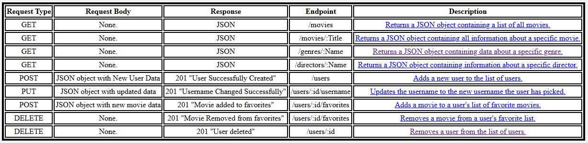

Meet Application Case Study
View Coding Events from around the world!
Meet is a web application built with React, Google Firebase Authentication, and the Google Calendar API. It allows users to browse and discover coding events happening in different cities around the world. Users can filter events by city, authenticate securely, and view detailed information about each event. The app also provides interactive graphs to visualize event data, such as the number of events per city or the distribution of event types.
Why Build This Project?
I created this project as part of the Full Stack Immersion course at CareerFoundry. The purpose of this app was to demonstrate my ability to use the React framework, as well as recieving information from APIs. During the development of this app I dove deep into many web development fundamentals, such as:
- React
- Google Firebase
- Google Calendar API
- Vite
- Recharts
- Jest-cucumber
The Process
Time:
This project took me several months to complete, to my surprise, the API was the easy part. Setting up the database and Express server was fairly straightforward, and did not take that much time. Getting the front end to look and act the way I wanted was much harder and took up the bulk of the time.
Credits:
Lead Developer/Designer: Timothy Pamplin
Tutor: Matthew Henderson
Mentor: Drew Mercer
Tools
- Google Firebase
- Vercel
- VSCode
- Node.JS
- Git
- Github

The Build
Before diving into building the user interface, I focused on quickly deploying the backend to ensure a solid foundation for the application. Once the backend was up and running, I shifted my attention to building the front end using React. This allowed me to create an interactive and responsive user experience that communicates seamlessly with the back end. The following steps outline how I approached and completed both the backend deployment and the front end development process.
Step 1: Firebase
To handle authentication securely and efficiently, I chose Firebase Authentication. Setting up Firebase allowed me to quickly implement user sign-up, login, and authentication flows without building a custom solution from scratch. With Firebase, I could easily manage user accounts, handle password resets, and ensure secure access to the application. This foundation made it much easier to focus on building out the rest of the project, knowing that authentication was robust and scalable.
Step 2: User Interface
With the backend in place, I used React to build a responsive and interactive front end. React’s component-based architecture allowed me to efficiently create reusable UI elements and organize the user interface. I focused on making the app easy to use and ensuring it looked good on both desktop and mobile devices. This approach made it straightforward to update and improve the UI as the project progressed. Additionally, I integrated the Google Calendar API to fetch and display (fake) real-time coding events from around the world, allowing users to browse, filter, and view detailed event information directly within the app.
Step 3: Charts and Styling
In the final step, I focused on styling the application and integrating data visualization. I used CSS to create a clean look that works well on both desktop and mobile devices. For data visualization, I implemented interactive charts using the Recharts library. These charts display useful insights, such as the number of events per city and the distribution of event types, making the data more engaging and easier to understand for users. This combination of thoughtful styling and dynamic charts helped bring the application to life and provided a polished user experience.
Testing
To ensure the Meet application worked as expected, I used Jest and Cucumber for testing. I wrote behavior-driven tests using Gherkin syntax to describe user interactions and application features. These tests helped verify that key functionalities—such as event filtering, authentication, and data visualization—performed correctly. Automated testing with Jest-Cucumber allowed me to catch bugs early and maintain confidence as I added new features.
Final Product!
The final Meet application is a single-page web app that brings together all core features in one seamless experience. Users can browse and filter coding events by city, view event details, and interact with dynamic charts—all without navigating away or reloading the page. The intuitive interface, responsive design, and real-time data updates make it easy for users to discover and explore events from anywhere in the world.
Conclusion
How did this project go?
This was easily the most difficult and time consuming project that I worked on during the Full Stack Immersion course at Career Foundry. This was probably one of the most difficult projects I’ve ever worked on. It was difficult for me to find adequate time to work on it, as I was working full time, and trying to make time for my family. I would sit down at my desk, and by the time I had figured out where I was and what I was working on, I had already run out of time. Ultimately, I just ended up sacrificing my sleep schedule, and staying up until two or three o’clock in the morning to work on this. I also spent ages trying to fix a bug in my front end that ended up actually being an issue with how my back end was handling the request. I had to get help from several different people before I was able to get that working. Overall, however, this was a very fulfilling project to work on, and I am proud of the final result that I produced. If you want to check it out, it is hosted on Netlify
View This Project
What would I add or change?
I was on a bit of a time crunch during this project, so I didn’t get to do everything that I wanted to. I always wanted to add more than ten movies to the database, or even better, I wanted to add the ability for a user to add a movie to the list; I even considered creating a second application specifically for reviewing movie submissions before they were shown on the main site. I could have spent a lifetime on styling and layout, but I had to move on to other projects in order to complete my course on time. This version of the app does not have the ability to view more information about the director or genre, even though that information is available in the database, so I would have liked to implement a pop up when you click on the director or genre that gives you that information. Other than that, I don’t think there was much I would change about this project.